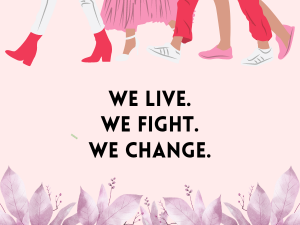
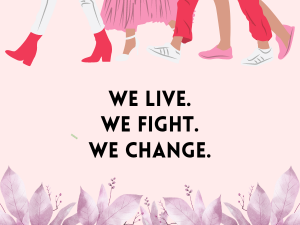

Women and their aura of change
Back in ancient times, women were expected of a lesser role in society. Upon birth, their course has always been the same. Staying at home, doing household chores, taking care of the family and ultimately, giving birth. It has only been in recent decades that women have been slowly accepted as a major presence in society. And yet until now, their foothold is not fully established. The fight for equality cannot be said that it has reached its end.
As women faced different challenges in the past, they fought through to not only have equality but also to be recognized as capable and relevant in the workforce. In the workplace where it is traditionally male dominant, women have shown their qualities, expertise and prowess in many of those different categories. They made a statement that they are capable in male dominated industries destroying those stereotypes.
But even after the movement, women should have been more valued as they have always been responsible for taking care and nurturing children who will in the future become great leaders and figures. In our community, women have always been the one that represents something that is warm, sympathetic, loving, understanding. They help us in making a change. They make a difference.
The qualities and abilities they demonstrated and show prove that they are significant and relevant in being catalysts of change. Even if the world feels indifferent about women, they continue to be determined because deep in their hearts, they are of high value. And sure, it is evident and easily agreed that without them we are stuck in the status quo. The presence of women is to be respected and held in high regard. Because they are here for a reason and they exist to live and to change.